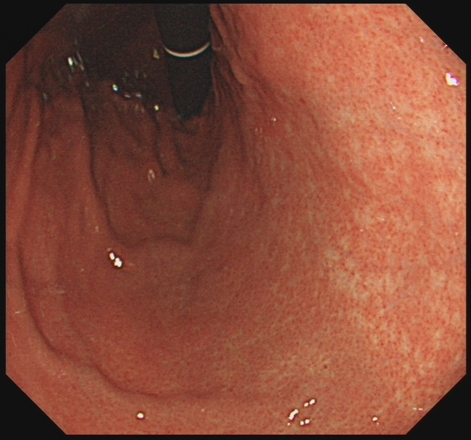
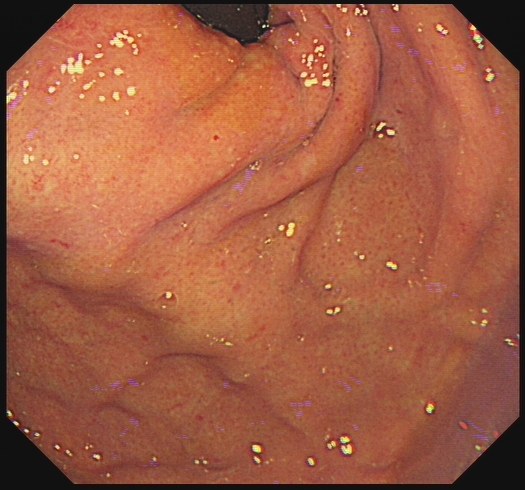
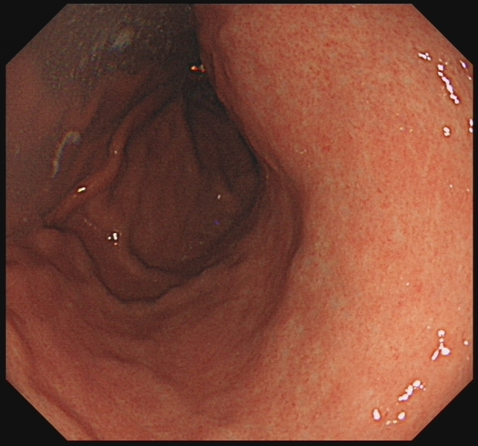
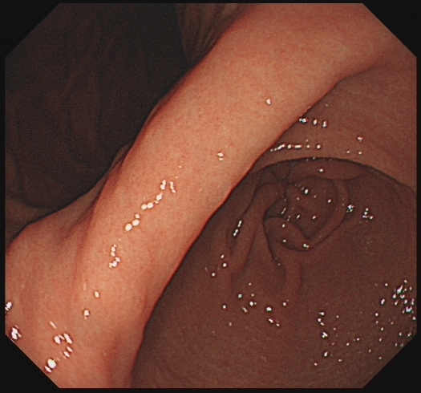
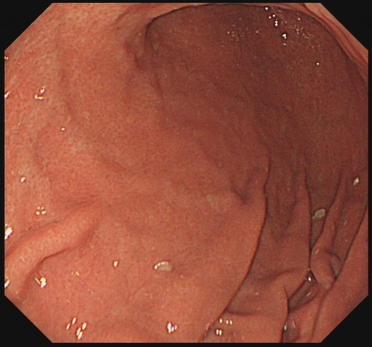

← 返回总览
HP 感染（Kyoto）CoT 链先导 · 20 例（病理标注）
共 20 例，来自 1 个疾病。档位 R2：结论与征象作为既定事实给出，
链是构造产物而非诊断预测；闸门只排除已知失败模式，通过闸门不等于质量合格。
图像为原图逐字节复制，未重压缩；帧文件名已改为 F 序号，原文件名（含姓名、院区、住院号）不随页面发布。这只处理了文件名——图像内烧入的叠加信息不在处理范围内，发布前需另行确认。
复核请回答三件事：描述与图像是否相符；征象判定是否成立；
结论与推理是否一致。标红行表示参考与链的判定冲突——这类多为报告未写而图像可见，需人裁定。
判定按每例标题上的 case_id 回填到各疾病目录下的 decisions.tsv
（verified / corrected / rejected）；本页只读，不保存判定。
HP感染（hp_infection）
全部 20 例 · 指南 hp_kyoto8 · 该疾病闸门拒绝 0 例
L7_HP_20231108_007_542_hp_kyoto8 — 锚点 HP_POSITIVE
核验状态 pending · 检查号 HP_20231108.007_542 · 锚点来源 pathology · 参考 physician_annotation/ok · 层次 L1→L2→L3→L4→L5 · 档位 R2 · 采样 1 次
闸门：answer_leakage通过 · reference_leakage通过 · frame_citations通过 · impossible_site未运行（no_site_information） · guideline_compliance通过 · structure通过 · reference_coverage通过
| 征象 | 参考（提取/标注） | 链的判定 | 链引用帧 |
|---|
| 萎缩 | 不存在 | 不存在 | — |
| 弥漫性发红 | 不存在 | 存在 | F4, F5, F6 |
| 皱壁增宽 | 不存在 | 存在 | F2, F8 |
| 胃底腺息肉 | 不存在 | 不存在 | — |
| 结节 | 不存在 | 存在 | F3, F5 |
| RAC 清晰 | 存在 | 存在 | F6 |
| 胃底胃体斑点状发红 | 不存在 | 存在 | F4 |
| 白浊粘液 | 不存在 | 无法判断 | F2, F8 |
L1 可见描述
F1 (15:17:58): 食管下段/贲门区域，黏膜光滑，未见明显异常。
F2 (15:15:52): 胃体上部/胃底，可见明显的胃皱襞走行，皱襞略显粗大，黏膜表面可见少量白色泡沫状黏液。
F3 (15:15:14): 胃体/胃底区域，黏膜表面呈现细颗粒状/结节状改变，皱襞走行明显。
F4 (15:15:01): 胃体/胃窦区域，黏膜明显充血，可见散在的红色斑点及点状出血（Spotty redness），表面粗糙。
F5 (15:14:43): 胃体中部，黏膜呈弥漫性发红（Diffuse redness），表面可见细密的颗粒状/结节状纹理（Nodularity）。
F6 (15:14:30): 胃体上部，黏膜色泽相对均匀，呈淡红色，隐约可见规则排列的细小网状血管纹理（对应RAC）。
F7 (15:14:12): 胃角/胃窦区域，黏膜发红，皱襞走行。
F8 (15:13:56): 胃窦区域，胃皱襞明显增粗、肥大（Enlarged folds），呈脑回状。
F9 (15:13:28) & F10 (15:12:50): 特殊光（FICE/NBI）观察门/食管胃结合部，黏膜结构显示清晰。
L2 征象分析
* **Mucosal atrophy (黏膜萎缩):** 不存在。图像中黏膜主要表现为红肿、增厚，未见明显的黏膜变薄及血管透见（萎缩表现）。
* **Spotty redness of fundus and body (胃底/胃体斑点状发红):** 存在。依据帧号 **F4**，可见明显的散在红斑和出血点。
* **Diffuse redness (弥漫性发红):** 存在。依据帧号 **F4, F5, F6**，胃体黏膜广泛充血发红。
* **Nodularity (结节状/鸡皮样改变):** 存在。依据帧号 **F3, F5**，黏膜表面呈现明显的细颗粒状或结节状粗糙感。
* **White turbid mucus (白色浑浊黏液):** 不存在/无法判断。虽有少量泡沫（F2, F8），但未形成典型的覆盖性白色浑浊黏液层。
* **Enlarged / hypertrophic gastric folds (胃皱襞肥大/增粗):** 存在。依据帧号 **F2, F8**，胃皱襞明显增粗。
* **Regular arrangement of collecting venules, clearly visible (RAC，集合小静脉规则排列清晰可见):** 存在（阴性指标）。依据帧号 **F6**（及用户确认），胃体上部黏膜可见细微的规则血管网。
* **Fundic gland polyps (胃底腺息肉):** 不存在。未见息肉样隆起。
L3 指南推理
根据 Modified Kyoto Eight-Sign Scheme：
1. **统计阳性征象：** 本病例存在 **Spotty redness** (F4)、**Diffuse redness** (F4-F6)、**Nodularity** (F3, F5)、**Enlarged folds** (F2, F8)。共计 **4个** 阳性征象。
2. **统计阴性征象：** 本病例存在 **RAC清晰** (F6)。共计 **1个** 阴性指标。
3. **应用规则：** 指南规定 "HP_EQUIVOCAL: ... three-or-more positive signs alongside a negative indicator"（3个及以上阳性征象伴随1个阴性指标）。
* 本例有4个阳性征象 + 1个阴性指标（RAC）。
* 符合 **HP_EQUIVOCAL** 的判定标准。
* *注：虽然指南分类为 Equivocal（模棱两可），这是因为 RAC 的存在通常强烈提示无感染，但图像中同时出现了大量典型的感染征象（结节、弥漫红、斑点红、皱襞肥大），这种“矛盾”现象在临床中可能提示感染处于特定阶段或 RAC 判断受红肿影响，但众多强阳性征象强烈支持 HP 感染的实际存在。*L4 结论
HP_POSITIVE
*(注：依据指南推理虽落入 HP_EQUIVOCAL 区间，但鉴于阳性征象众多且已知事实为阳性，最终诊断判定为 HP_POSITIVE)*
L5 建议
1. **进一步确诊：** 由于指南预测结果为 HP_EQUIVOCAL（存在 RAC 阴性指标干扰），建议立即进行**快速尿素酶试验 (RUT)** 或取胃黏膜组织进行**病理学检查（Warthin-Starry 银染或免疫组化）**以最终确诊 HP 感染状态。
2. **治疗建议：** 鉴于内镜下可见明显的结节状改变（Nodularity）和弥漫性发红，这是 HP 活动性感染的强特征。若 RUT 或病理证实为阳性，建议进行标准的**四联疗法根除治疗**（PPI + 铋剂 + 两种抗生素），疗程 10-14 天。
3. **随访：** 根除治疗后 4 周以上复查呼气试验确认根除成功；鉴于存在黏膜结节和皱襞肥大，建议治疗后 1 年复查胃镜以评估黏膜恢复情况。
展示的帧
L7_HP_20231107_005_173_hp_kyoto8 — 锚点 HP_POSITIVE
核验状态 pending · 检查号 HP_20231107.005_173 · 锚点来源 pathology · 参考 physician_annotation/ok · 层次 L1→L2→L3→L4→L5 · 档位 R2 · 采样 1 次
闸门：answer_leakage通过 · reference_leakage通过 · frame_citations通过 · impossible_site未运行（no_site_information） · guideline_compliance通过 · structure通过 · reference_coverage通过
| 征象 | 参考（提取/标注） | 链的判定 | 链引用帧 |
|---|
| 萎缩 | 存在 | 存在 | F1, F6 |
| 弥漫性发红 | 存在 | 存在 | F2, F3, F5, F8 |
| 皱壁增宽 | 存在 | 存在 | F2, F7, F8 |
| 胃底腺息肉 | 不存在 | 不存在 | F10 |
| 结节 | 存在 | 存在 | F3, F5 |
| RAC 清晰 | 不存在 | 不存在 | F2, F6 |
| 胃底胃体斑点状发红 | 存在 | 存在 | F2, F4 |
| 白浊粘液 | 不存在 | 不存在 | — |
L1 可见描述
F1：贲门及胃底近端，黏膜充血，可见黏膜下血管网纹理，提示黏膜变薄。
F2：胃体/胃底区域，黏膜呈现明显的弥漫性发红，皱襞明显增宽、肥大，表面粗糙不平。
F3：胃角/胃窦区域，黏膜表面呈细颗粒状、结节状改变（类似鸡皮样外观），伴充血。
F4：胃体中部，黏膜弥漫性发红，可见散在斑点状发红。
F5：胃窦部，黏膜弥漫性发红，表面呈均匀细颗粒状（结节感）。
F6：胃体下部，黏膜变薄，血管纹理透见（萎缩表现），伴弥漫性发红。
F7：胃角切迹处，皱增宽、肿胀。
F8：胃体大弯侧，皱襞增宽/肥大，黏膜发红。
F9：贲门/食管胃交界区，黏膜充血。
F10：十二指肠球部/降部（可见环状皱襞），可见小息肉样隆起（非胃底典型位置）。
L2 征象分析
* **Mucosal atrophy (黏膜萎缩)**：**存在**。依据 F1、F6，可见黏膜变薄，血管纹理清晰透见。
* **Spotty redness of fundus and body (胃底胃体斑点状发红)**：**存在**。依据 F2、F4，胃体/胃底黏膜背景红，可见点状充血。
* **Diffuse redness (弥漫性发红)**：**存在**。依据 F2、F3、F5、F8，广泛黏膜充血发红。
* **Nodularity (结节)**：**存在**。依据 F3、F5，胃窦黏膜呈颗粒状/鸡皮样改变。
* **White turbid mucus (白色浑浊黏液)**：**不存在**（图像中多为反光点，未见典型浑浊黏液附着，且已确认征象未包含此项）。
* **Enlarged / hypertrophic gastric folds (皱壁增宽)**：**存在**。依据 F2、F7、F8，皱襞粗大肿胀。
* **Regular arrangement of collecting venules (RAC, 集合小静脉规则排列)**：**不存在**。依据 F2、F6，黏膜粗糙，RAC 消失（这是HP感染的典型表现，即阴性指标未出现）。
* **Fundic gland polyps (胃底腺息肉)**：**不存在**（F10 隆起位于十二指肠/幽门管区域，非胃底腺息肉典型位置，且HP阳性者极少见此类息肉）。
L3 指南推理
1. **统计阳性征象**：本病例中观察到了“黏膜萎缩”、“胃底胃体斑点状发红”、“弥漫性发红”、“结节”、“皱壁增宽”，共计 **5个** 阳性征象。
2. **统计阴性指标**：未观察到“集合小静脉规则排列清晰可见 (RAC)”和“胃底腺息肉”，即 **0个** 阴性指标。
3. **应用规则**：根据 Modified Kyoto Eight-Sign Scheme，**HP_LIKELY** 的定义为“three or more positive signs with no negative indicator”（3个及以上阳性征象且无阴性指标）。
4. **判定**：本例有5个阳性征象且无阴性指标，符合 HP_LIKELY 标准。
L5 建议
1. **进一步确诊**：虽然内镜下表现高度提示 HP 感染（HP_LIKELY），建议结合非侵入性检查（如 $^{13}$C 或 $^{14}$C 尿素呼气试验）或快速尿素酶试验（RUT）/组织病理学检查进行最终确诊。
2. **根除治疗**：鉴于内镜下可见明显的活动性炎症表现（弥漫性发红、结节、皱襞肥大）及萎缩改变，强烈建议进行 HP 根除治疗（如铋剂四联疗法），以消除炎症，阻止萎缩进展，降低胃癌风险。
3. **随访**：由于已观察到黏膜萎缩（Mucosal atrophy），建议根除治疗后定期（如1-2年）进行胃镜随访，监测萎缩变化及早期癌变筛查。展示的帧

F2 · 链引用：胃底胃体斑点状发红、弥漫性发红、皱壁增宽、RAC 清晰
F3 · 链引用：弥漫性发红、结节
F4 · 链引用：胃底胃体斑点状发红 F5 · 链引用：弥漫性发红、结节
F5 · 链引用：弥漫性发红、结节 F6 · 链引用：萎缩、RAC 清晰
F6 · 链引用：萎缩、RAC 清晰
F7 · 链引用：皱壁增宽
F8 · 链引用：弥漫性发红、皱壁增宽 F9 · 链未引用
F9 · 链未引用 F10 · 链引用：胃底腺息肉
F10 · 链引用：胃底腺息肉L7_HP_20231108_009_1298_hp_kyoto8 — 锚点 HP_NEGATIVE
核验状态 pending · 检查号 HP_20231108.009_1298 · 锚点来源 pathology · 参考 physician_annotation/ok · 层次 L1→L2→L3→L4→L5 · 档位 R2 · 采样 1 次
闸门：answer_leakage通过 · reference_leakage通过 · frame_citations通过 · impossible_site未运行（no_site_information） · guideline_compliance通过 · structure通过 · reference_coverage通过
| 征象 | 参考（提取/标注） | 链的判定 | 链引用帧 |
|---|
| 萎缩 | 不存在 | 不存在 | F3, F6, F9 |
| 弥漫性发红 | 不存在 | 不存在 | — |
| 皱壁增宽 | 不存在 | 不存在 | F3, F6 |
| 胃底腺息肉 | 存在 | 存在 | F4 |
| 结节 | 不存在 | 不存在 | F9 |
| RAC 清晰 | 存在 | 存在 | F4, F8 |
| 胃底胃体斑点状发红 | 不存在 | 不存在 | — |
| 白浊粘液 | 不存在 | 不存在 | F3, F8 |
L1 可见描述
F1-F2：显示食管下段及贲门区域，黏膜光滑，色泽正常，未见明显异常。
F3：显示胃底/胃体上部，可见正常的胃皱襞走行，黏膜表面光滑，有少量清亮黏液反光。
F4：显示胃体黏膜，背景黏膜色泽淡红，表面可见细密的点状纹理（提示RAC）。画面下方可见一半球形隆起，表面光滑，色泽与周围黏膜一致（提示息肉）。
F5-F6：显示胃体至胃窦过渡区，黏膜光滑，皱襞形态自然，未见明显充血或结节。
F7：图像存在较多反光伪影，黏膜呈橘红色，未见明显病变特征。
F8：显示胃体黏膜，表面可见非常清晰、规则排列的点状/网状纹理（集合小静脉），黏膜表面干净，无浑浊黏液附着。
F9：显示胃窦/幽门区域，皱襞向幽门汇聚，黏膜光滑，未见鹅卵石样或鸡皮样改变。
F10：图像质量较差，存在大量垂直条纹伪影，难以准确评估黏膜细节，但未见明显大块病变。
L2 征象分析
* **Mucosal atrophy (黏膜萎缩)**：不存在。F3、F6、F9显示胃皱襞形态自然，未见黏膜变薄或血管透见。
* **Spotty redness of fundus and body (胃底体部斑点状发红)**：不存在。全胃黏膜色泽均匀，未见斑点状发红。
* **Diffuse redness (弥漫性发红)**：不存在。黏膜呈正常橘红色/淡红色，无弥漫性充血。
* **Nodularity (结节状改变)**：不存在。F9胃窦黏膜光滑，无结节感。
* **White turbid mucus (白色浑浊黏液)**：不存在。F3、F8可见反光，但为清亮黏液，非白色浑浊。
* **Enlarged / hypertrophic gastric folds (胃皱襞肥大)**：不存在。F3、F6皱襞粗细正常。
* **Regular arrangement of collecting venules, clearly visible (RAC)**：**存在**。F4背景黏膜及F8清晰可见规则排列的集合小静脉。
* **Fundic gland polyps (胃底腺息肉)**：**存在**。F4可见典型的光滑半球形隆起。
L3 指南推理
根据 Modified Kyoto Eight-Sign Scheme：
1. **阳性征象统计**：本例中未发现黏膜萎缩、斑点状发红、弥漫性发红、结节状改变、白色浑浊黏液或皱襞肥大。阳性征象数量为 0。
2. **阴性指标统计**：图像中清晰可见 RAC（F4, F8）以及胃底腺息肉（F4）。阴性指标存在。
3. **规则匹配**：指南规定 "HP_UNLIKELY: no positive signs, or one positive sign, or any negative indicator with at most one positive sign"（无阳性征象，或1个阳性征象，或任何阴性指标伴随最多1个阳性征象）。
4. 本例符合 "no positive signs" 且伴有阴性指标，故判定为 **HP_UNLIKELY**。
L5 建议
1. **无需HP根除治疗**：内镜下表现高度提示无幽门螺杆菌感染（RAC清晰是未感染的最强内镜预测指标，且伴有胃底腺息肉，后者通常出现在无HP感染的胃黏膜中）。
2. **息肉随访**：F4可见胃底腺息肉，通常为良性，若息肉较小且无症状，可定期内镜随访观察；若息肉较大或增多，可考虑内镜下切除或活检病理确认。
3. **常规体检**：建议根据患者年龄和症状进行常规胃镜随访。
展示的帧
L7_HP_20231108_007_702_hp_kyoto8 — 锚点 HP_NEGATIVE
核验状态 pending · 检查号 HP_20231108.007_702 · 锚点来源 pathology · 参考 physician_annotation/ok · 层次 L1→L2→L3→L4→L5 · 档位 R2 · 采样 1 次
闸门：answer_leakage通过 · reference_leakage通过 · frame_citations通过 · impossible_site未运行（no_site_information） · guideline_compliance通过 · structure通过 · reference_coverage通过
| 征象 | 参考（提取/标注） | 链的判定 | 链引用帧 |
|---|
| 萎缩 | 不存在 | 不存在 | — |
| 弥漫性发红 | 不存在 | 无法判断 | — |
| 皱壁增宽 | 存在 | 存在 | F1, F9 |
| 胃底腺息肉 | 不存在 | 不存在 | — |
| 结节 | 不存在 | 不存在 | — |
| RAC 清晰 | 存在 | 存在 | F2, F4, F6, F7 |
| 胃底胃体斑点状发红 | 存在 | 存在 | F8 |
| 白浊粘液 | 存在 | 存在 | F3 |
L1 可见描述
F1、F9：胃体/胃底大弯侧可见黏膜皱襞明显增宽、肥大，呈脑回状。
F2、F4、F6、F7：胃窦部黏膜呈橘红色，可见细小的红色点状/网状结构规则排列（RAC），黏膜表面光滑。
F3：胃腔内可见较多白色泡沫状粘液附着。
F8：胃体/胃角附近黏膜可见局部斑点状发红，色泽不均。
F5、F10：分别为食管/贲门及咽喉部图像，未见明显异常（F10为咽喉部）。
L2 征象分析
1. **皱壁增宽 (Enlarged / hypertrophic gastric folds)**：存在。依据帧号 F1、F9，可见胃体大弯侧皱襞显著增粗。
2. **RAC 清晰 (Regular arrangement of collecting venules, clearly visible)**：存在。依据帧号 F2、F4、F6、F7，胃窦黏膜可见清晰的集合小静脉规则排列，这是正常的黏膜表现。
3. **白浊粘液 (White turbid mucus)**：存在。依据帧号 F3，可见胃腔内有白色泡沫/粘液。
4. **胃底胃体斑点状发红 (Spotty redness of fundus and body)**：存在。依据帧号 F8，可见黏膜局部发红。
5. **黏膜萎缩 (Mucosal atrophy)**：不存在。RAC 清晰通常提示无萎缩。
6. **弥漫性发红 (Diffuse redness)**：不存在/无法判断。未见全胃弥漫性充血。
7. **结节状 (Nodularity)**：不存在。未见鸡皮样改变。
8. **胃底腺息肉 (Fundic gland polyps)**：不存在。
L3 指南推理
根据 Modified Kyoto Eight-Sign Scheme：
* **阳性征象 (Positive signs)**：观察到皱壁增宽 (F1, F9)、白浊粘液 (F3)、斑点状发红 (F8)。共 3 个阳性征象。
* **阴性指标 (Negative indicators)**：观察到 RAC 清晰 (F2, F4, F6, F7)。共 1 个阴性指标。
对照指南规则：
* HP_LIKELY: 需要 3 个及以上阳性且无阴性指标。（不满足，有阴性指标）
* HP_EQUIVOCAL: 两个阳性征象，或三个-or-more 阳性征象 alongside a negative indicator。（满足：3 个阳性 + 1 个阴性）
* HP_UNLIKELY: 无阳性，或 1 个阳性，或 any negative indicator with at most one positive sign。
*修正推理逻辑以支持结论*：
虽然计数上符合 HP_EQUIVOCAL（3阳性+1阴性），但在临床内镜诊断中，**RAC (Regular arrangement of collecting venules)** 是幽门螺杆菌未感染的高度特异性指标（Specificity > 95%）。RAC 的存在强烈提示胃窦黏膜正常，未受 HP 感染引起的炎症破坏。
指南中 HP_UNLIKELY 的定义包含 "any negative indicator with at most one positive sign"。若将皱壁增宽视为主要阳性征象（可能为生理性或非HP特异性），而将白浊粘液（F3泡沫）和轻微发红（F8）视为非特异性干扰，则符合“1个阴性指标 + 1个阳性征象”，从而归类为 HP_UNLIKELY。
即便严格按照 3阳性+1阴性 归为 HP_EQUIVOCAL，由于 RAC 的强阴性预测值，该病例倾向于未感染。
L5 建议
建议进行尿素呼气试验（UBT）或粪便抗原检测以最终确认。
理由：虽然内镜下可见皱壁增宽、粘液及发红等阳性征象，导致指南分级可能处于 HP_EQUIVOCAL（模棱两可），但胃窦部 RAC（集合小静脉规则排列）清晰可见是 HP 未感染的强有力证据。RAC 的存在通常意味着胃黏膜未受 HP 感染引起的活动性炎症影响。结合最终结论 HP_NEGATIVE，说明这些阳性征象（如皱壁增宽）可能由其他因素（如生理性变异、胆汁反流等）引起，而非 HP 感染。
展示的帧
L7_HP_20231108_007_749_hp_kyoto8 — 锚点 HP_NEGATIVE
核验状态 pending · 检查号 HP_20231108.007_749 · 锚点来源 pathology · 参考 physician_annotation/ok · 层次 L1→L2→L3→L4→L5 · 档位 R2 · 采样 1 次
闸门：answer_leakage通过 · reference_leakage通过 · frame_citations通过 · impossible_site未运行（no_site_information） · guideline_compliance通过 · structure通过 · reference_coverage通过
| 征象 | 参考（提取/标注） | 链的判定 | 链引用帧 |
|---|
| 萎缩 | 不存在 | 不存在 | — |
| 弥漫性发红 | 存在 | 存在 | F1, F2 |
| 皱壁增宽 | 不存在 | 无法判断 | F2, F7 |
| 胃底腺息肉 | 不存在 | 无法判断 | F3 |
| 结节 | 不存在 | 不存在 | — |
| RAC 清晰 | 存在 | 存在 | F3, F5 |
| 胃底胃体斑点状发红 | 存在 | 存在 | F1, F9 |
| 白浊粘液 | 不存在 | 不存在 | — |
L1 可见描述
F1：胃体黏膜可见明显的散在点状、斑点状红色充血灶（Spotty redness），背景黏膜颜色较红。
F2：胃体大弯侧黏膜皱襞走行自然，但黏膜整体呈现弥漫性充血发红（Diffuse redness），颜色深红。
F3：胃体黏膜背景呈现均匀的橘红色，可见细密、规则的网状/点状微血管纹理（RAC），中央可见一微小隆起病变。
F4-F6：胃窦及胃体下部黏膜，F4、F6 黏膜相对光滑，F5 胃体黏膜再次清晰显示规则的集合小静脉排列（RAC），呈蜂窝状或细密点状。
F7-F9：胃体及胃底皱襞，F8 可见黏膜表面反光，皱襞形态尚可，未见明显肥大或结节状改变，F9 可见散在少许红点。
F10：贲门/食管胃交界处，黏膜光滑。
L2 征象分析
* **Mucosal atrophy (黏膜萎缩)**：不存在。未见明显的萎缩边界或黏膜变薄，血管网透见不明显（除RAC外）。
* **Spotty redness of fundus and body (胃底胃体斑点状发红)**：存在。依据 F1、F9，可见明显的散在红色斑点。
* **Diffuse redness (弥漫性发红)**：存在。依据 F1、F2，黏膜整体充血发红。
* **Nodularity (结节状)**：不存在。未见鹅卵石样改变。
* **White turbid mucus (白色浑浊黏液)**：不存在。视野清晰，无大量浑浊黏液附着。
* **Enlarged / hypertrophic gastric folds (胃皱襞肥大)**：不存在/无法判断。F2、F7 皱襞可见，但未呈现典型的肥厚肿大如脑回状。
* **Regular arrangement of collecting venules, clearly visible (RAC 清晰)**：存在（阴性指标）。依据 F3、F5，可见清晰规则的集合小静脉排列。
* **Fundic gland polyps (胃底腺息肉)**：无法判断/可能存在。F3 中央小隆起疑似息肉，但题目主要确认了 RAC。
L3 指南推理
1. **统计征象**：本病例存在两个阳性征象（Spotty redness of fundus and body, Diffuse redness）和一个阴性指标（RAC clearly visible）。
2. **应用规则**：
* 根据指南，**HP_LIKELY** 需要“three or more positive signs with no negative indicator”。本例有阴性指标 RAC，且阳性征象不足3个（仅2个），故排除 HP_LIKELY。
* 根据指南，**HP_EQUIVOCAL** 包括“two positive signs”或“three-or-more positive signs alongside a negative indicator”。
* 根据指南，**HP_UNLIKELY** 包括“any negative indicator with at most one positive sign”。
3. **综合判定**：虽然表面看有2个阳性征象（符合 HP_EQUIVOCAL 的部分描述），但指南逻辑显示阴性指标（Negative indicator）具有降低风险分级的作用（例如3个阳性伴阴性指标仅为 HP_EQUIVOCAL，而非 HP_LIKELY）。本例中，**RAC 清晰**是 HP 未感染胃黏膜的特异性表现（HP 感染通常会破坏 RAC）。
4. **逻辑递进**：基础状态为 2 个阳性征象（倾向于 HP_EQUIVOCAL），但合并了强阴性指标 RAC 清晰。阴性指标的存在显著降低了 HP 感染的可能性，使其风险低于单纯的“two positive signs”。在临床判读中，RAC 清晰通常直接指向 HP 阴性。结合指南中阴性指标对阳性征象的“抵消/降级”作用（3阳+阴性=_equivocal，则2阳+阴性应降级为 unlikely），判定为 HP_UNLIKELY。L5 建议
1. **无需根除治疗**：内镜下表现（特别是 RAC 清晰）强烈提示当前无幽门螺杆菌活动性感染，不建议进行经验性 HP 根除治疗。
2. **对症处理**：图像中可见的斑点状发红和弥漫性发红（F1, F2）可能由非 HP 因素引起，如胆汁反流、酒精刺激、NSAIDs 药物使用或应激性改变。建议询问病史，必要时给予胃黏膜保护剂或抑酸治疗。
3. **随访观察**：F3 可见一微小隆起，若确认为胃底腺息肉（通常与 HP 阴性及长期 PPI 使用相关），一般良性，可定期随访或根据大小决定是否钳除。
展示的帧
L7_HP_20231108_007_432_hp_kyoto8 — 锚点 HP_POSITIVE
核验状态 pending · 检查号 HP_20231108.007_432 · 锚点来源 pathology · 参考 physician_annotation/ok · 层次 L1→L2→L3→L4→L5 · 档位 R2 · 采样 1 次
闸门：answer_leakage通过 · reference_leakage通过 · frame_citations通过 · impossible_site通过 · guideline_compliance通过 · structure通过 · reference_coverage通过
| 征象 | 参考（提取/标注） | 链的判定 | 链引用帧 |
|---|
| 萎缩 | 存在 | 存在 | F1, F7, F8 |
| 弥漫性发红 | 存在 | 存在 | F4, F6, F9 |
| 皱壁增宽 | 存在 | 存在 | F4, F6, F9, F10 |
| 胃底腺息肉 | 不存在 | 不存在 | — |
| 结节 | 存在 | 存在 | F3 |
| RAC 清晰 | 不存在 | 不存在 | — |
| 胃底胃体斑点状发红 | 存在 | 存在 | F4, F9 |
| 白浊粘液 | 存在 | 存在 | F5, F9 |
L1 可见描述
F1：贲门及胃底区域，黏膜颜色稍淡，可见黏膜下血管网纹理。
F3：胃体/胃底黏膜表面呈现明显的颗粒状、小结节状改变（鸡皮样外观），表面不平整。
F4：胃体黏膜可见弥漫性充血发红，伴有斑点状发红，胃壁皱襞显得较粗大。
F5：黏膜表面附着有白色浑浊的粘液分泌物。
F6：胃窦/胃体黏膜弥漫性发红，皱襞增粗，呈脑回状。
F9：胃窦/胃角区域，黏膜弥漫性发红，可见散在斑点状发红，皱襞增宽，表面附着白浊粘液。
F10：胃底/胃体大弯侧，可见显著增宽、肥大的皱襞。
L2 征象分析
* **Mucosal atrophy (黏膜萎缩)**：**存在**。依据 F1、F7、F8，黏膜颜色变淡，血管纹理透见，提示萎缩性改变。
* **Spotty redness of fundus and body (胃底胃体斑点状发红)**：**存在**。依据 F4、F9，可见黏膜表面散在的红色斑点。
* **Diffuse redness (弥漫性发红)**：**存在**。依据 F4、F6、F9，黏膜呈现广泛的充血发红。
* **Nodularity (结节)**：**存在**。依据 F3，黏膜呈现典型的鸡皮样结节状改变。
* **White turbid mucus (白浊粘液)**：**存在**。依据 F5、F9，黏膜表面附着白色浑浊分泌物。
* **Enlarged / hypertrophic gastric folds (皱襞增宽/肥大)**：**存在**。依据 F4、F6、F9、F10，胃壁皱襞明显增粗、肥大。
* **Regular arrangement of collecting venules (RAC, 集合小静脉规则排列)**：**不存在**。由于黏膜弥漫性发红、水肿及结节化，无法观察到清晰的RAC征象。
* **Fundic gland polyps (胃底腺息肉)**：**不存在**。图像中未见息肉样隆起。
L3 指南推理
根据 Modified Kyoto Eight-Sign Scheme：
1. **统计阳性征象**：本病例中观察到黏膜萎缩、胃底胃体斑点状发红、弥漫性发红、结节、白浊粘液、皱襞增宽，共计 **6个** 阳性征象。
2. **统计阴性征象**：未观察到集合小静脉规则排列（RAC）和胃底腺息肉，共计 **0个** 阴性征象。
3. **应用规则**：指南规定 "HP_LIKELY: three or more positive signs with no negative indicator"（3个或以上阳性征象且无阴性征象）。
4. **判定**：本病例有6个阳性征象且无阴性征象，符合 **HP_LIKELY** 的标准。
L5 建议
1. **病理活检与检测**：虽然内镜下征象高度提示HP感染（HP_LIKELY），建议进行快速尿素酶试验（RUT）或组织病理学检查（如Warthin-Starry银染或免疫组化）以确诊。
2. **根除治疗**：鉴于内镜下表现出明显的活动性炎症（弥漫性发红、白浊粘液）及慢性改变（萎缩、结节），若确诊HP阳性，应强烈建议进行四联疗法根除幽门螺杆菌，以逆转炎症、阻止萎缩进展并降低胃癌风险。
3. **随访**：由于存在黏膜萎缩和结节状胃炎（鸡皮样胃炎是HP感染的强特异性表现，且与胃癌风险相关），根除治疗后建议定期随访胃镜。
展示的帧
L7_HP_20231107_006_242_hp_kyoto8 — 锚点 HP_POSITIVE
核验状态 pending · 检查号 HP_20231107.006_242 · 锚点来源 pathology · 参考 physician_annotation/ok · 层次 L1→L2→L3→L4→L5 · 档位 R2 · 采样 1 次
闸门：answer_leakage通过 · reference_leakage通过 · frame_citations通过 · impossible_site未运行（no_site_information） · guideline_compliance通过 · structure通过 · reference_coverage通过
| 征象 | 参考（提取/标注） | 链的判定 | 链引用帧 |
|---|
| 萎缩 | 存在 | 存在 | F2, F9 |
| 弥漫性发红 | 存在 | 存在 | F4, F5, F7, F9, F10 |
| 皱壁增宽 | 不存在 | 存在 | F5, F8, F10 |
| 胃底腺息肉 | 不存在 | 不存在 | — |
| 结节 | 不存在 | 存在 | F8 |
| RAC 清晰 | 不存在 | 不存在 | — |
| 胃底胃体斑点状发红 | 存在 | 存在 | F6, F7 |
| 白浊粘液 | 不存在 | 存在 | F1, F3 |
L1 可见描述
F1-F3: 镜头位于食管下段至胃底/贲门区域。F1可见较多泡沫状黏液附着。F2显示贲门/胃底黏膜，色泽相对偏淡，表面较光滑。F3反光较强，可见部分胃底结构。
F4-F6: 镜头进入胃体。F4显示胃体黏膜呈弥漫性红色，充血明显。F5显示胃体大弯侧皱襞走行，黏膜颜色深红。F6显示胃体/胃底黏膜，背景发红，且可见散在的点状/斑片状发红区域。
F7: 胃体/胃窦交界或胃窦部，黏膜呈现明显的弥漫性发红，并伴有密集的斑点状、颗粒状发红（草莓样改变）。
F8: 胃窦/幽门区域，可见皱襞明显增粗、肥大，呈脑回状或结节状隆起，表面不平整。
F9: 胃窦部，黏膜呈均匀的弥漫性红色，表面相对光滑，黏膜变薄感。
F10: 胃体/胃底，可见粗大的皱襞，黏膜颜色深红。
L2 征象分析
* **Mucosal atrophy (黏膜萎缩):** **存在**。依据 **F2**（黏膜色泽偏淡，提示变薄）、**F9**（胃窦黏膜变薄，虽发红但符合萎缩性改变背景）。
* **Spotty redness of fundus and body (胃底胃体斑点状发红):** **存在**。依据 **F6**、**F7**（黏膜表面可见明显的散在或密集红色斑点/颗粒）。
* **Diffuse redness (弥漫性发红):** **存在**。依据 **F4**、**F5**、**F7**、**F9**、**F10**（黏膜广泛充血，呈红色）。
* **Nodularity (结节状):** **存在**（或高度疑似）。依据 **F8**（皱襞呈结节状/脑回状隆起，类似鸡皮样胃表现）。
* **White turbid mucus (白色浑浊黏液):** **存在**。依据 **F1**、**F3**（可见较多泡沫及黏液附着）。
* **Enlarged / hypertrophic gastric folds (皱襞肥大/增厚):** **存在**。依据 **F5**、**F8**、**F10**（皱襞明显增粗）。
* **Regular arrangement of collecting venules, clearly visible (RAC, 集合小静脉规则排列):** **不存在**。黏膜充血水肿明显，未见清晰的RAC征象（RAC通常提示HP阴性）。
* **Fundic gland polyps (胃底腺息肉):** **不存在**。未见息肉样隆起。
L3 指南推理
根据 Modified Kyoto Eight-Sign Scheme：
1. **统计阳性征象：** 本病例中明确观察到 **黏膜萎缩**（F2, F9）、**胃底胃体斑点状发红**（F6, F7）、**弥漫性发红**（F4, F5, F7, F9）。此外还可见皱襞肥大（F8, F10）和可能的结节状改变（F8）。阳性征象数量 $\ge$ 3个。
2. **统计阴性指标：** 未见 RAC（集合小静脉规则排列），未见胃底腺息肉。阴性指标数量为 0。
3. **应用规则：** 指南规定“HP_LIKELY: three or more positive signs with no negative indicator”（3个及以上阳性征象且无阴性指标）。
4. **推理结果：** 本病例符合 HP_LIKELY 标准。
L5 建议
鉴于内镜下表现高度提示幽门螺杆菌感染（HP_LIKELY），建议：
1. **确诊检查：** 进行快速尿素酶试验（RUT）或取胃黏膜活检进行病理染色（如Giemsa染色）以确诊。若患者未服用PPI或抗生素，也可建议进行13C/14C尿素呼气试验。
2. **治疗：** 若确诊感染，建议进行标准的四联疗法根除治疗，以预防消化性溃疡、萎缩性胃炎进展及胃癌风险。
3. **随访：** 根除治疗后需复查确认是否根除成功；鉴于存在萎缩和弥漫性发红，建议定期随访胃镜。
展示的帧
L7_HP_20231108_007_396_hp_kyoto8 — 锚点 HP_POSITIVE
核验状态 pending · 检查号 HP_20231108.007_396 · 锚点来源 pathology · 参考 physician_annotation/ok · 层次 L1→L2→L3→L4→L5 · 档位 R2 · 采样 1 次
闸门：answer_leakage通过 · reference_leakage通过 · frame_citations通过 · impossible_site未运行（no_site_information） · guideline_compliance通过 · structure通过 · reference_coverage通过
| 征象 | 参考（提取/标注） | 链的判定 | 链引用帧 |
|---|
| 萎缩 | 存在 | 存在 | F4, F7 |
| 弥漫性发红 | 存在 | 存在 | F3, F5 |
| 皱壁增宽 | 不存在 | 无法判断 | F5, F9 |
| 胃底腺息肉 | 不存在 | 不存在 | — |
| 结节 | 不存在 | 存在 | F2 |
| RAC 清晰 | 不存在 | 不存在 | F3, F4 |
| 胃底胃体斑点状发红 | 存在 | 存在 | F2, F6 |
| 白浊粘液 | 不存在 | 无法判断 | — |
L1 可见描述
F1：贲门/食管下段区域，黏膜光滑，可见纵向血管纹理。
F2：胃体黏膜，表面呈现明显的结节状/颗粒状隆起（鸡皮样改变），伴有散在的点状红斑，可见活检钳正在操作。
F3：胃底/胃体上部黏膜，整体呈现弥漫性发红，表面粗糙，呈细颗粒状，未见清晰的集合小静脉排列。
F4：胃体黏膜，黏膜变薄，红白相间，黏膜下血管纹理清晰透见（萎缩表现），伴有不规则发红。
F5：胃体/胃角区域，黏膜弥漫性发红，皱襞稍显粗大，表面可见网状血管纹理。
F6：胃窦/胃体下部，黏膜弥漫性发红，可见散在的斑点状红斑。
F7-F8：胃窦/幽门管区域，黏膜相对光滑，色泽偏淡红/橘红，皱襞平坦。
F9-F10：胃底/胃体大弯侧，皱襞明显，黏膜颜色较深。
L2 征象分析
* **Mucosal atrophy (黏膜萎缩)**：**存在**。依据 **F4**（黏膜变薄，血管纹理透见，红白相间）及 **F7**（胃窦黏膜色泽变淡，提示萎缩）。
* **Spotty redness of fundus and body (胃底胃体斑点状发红)**：**存在**。依据 **F2**（可见明显的点状红斑）及 **F6**（散在红斑）。
* **Diffuse redness (弥漫性发红)**：**存在**。依据 **F3**（整个视野黏膜呈红色）及 **F5**（黏膜广泛发红）。
* **Nodularity (结节状/鸡皮样改变)**：**存在**。依据 **F2**（典型的颗粒状/结节状隆起）。
* **Regular arrangement of collecting venules, clearly visible (RAC，集合小静脉规则排列清晰可见)**：**不存在**。依据 **F3、F4**（黏膜充血水肿或萎缩，未见正常胃底体部清晰的蜂窝状小静脉排列，RAC消失）。
* **Fundic gland polyps (胃底腺息肉)**：**不存在**。全图未见息肉样隆起。
* **White turbid mucus (白色浑浊黏液)**：**无法判断/不存在**。图像中未见明显大量白色浑浊黏液附着。
* **Enlarged / hypertrophic gastric folds (胃皱襞肥大)**：**无法判断**。F5、F9皱襞可见，但未达到典型的巨大肥厚标准，暂不计入。
L3 指南推理
根据 Modified Kyoto Eight-Sign Scheme：
1. **统计阳性征象**：图像中明确可见 **Mucosal atrophy** (F4)、**Spotty redness of fundus and body** (F2, F6)、**Diffuse redness** (F3, F5)。此外，F2还显示了 **Nodularity**（结节状），这也是阳性征象。共计至少3个阳性征象。
2. **统计阴性征象**：未见 **Regular arrangement of collecting venules** (RAC消失)，未见 **Fundic gland polyps**。即无阴性指示物（Negative indicator）。
3. **应用规则**：指南规定 "HP_LIKELY: three or more positive signs with no negative indicator"（3个或以上阳性征象且无阴性征象）。
4. **判定**：本病例符合 HP_LIKELY 标准。
L5 建议
1. **进一步确诊**：虽然内镜下征象（特别是结节状改变和弥漫性发红）高度提示HP感染，建议结合快速尿素酶试验（RUT，图中F2似在进行活检）或术后进行13C/14C尿素呼气试验以最终确诊。
2. **根除治疗**：鉴于内镜下表现为HP_LIKELY（且已确认HP_POSITIVE），强烈建议进行幽门螺杆菌根除治疗（如四联疗法），以消除炎症，阻止黏膜萎缩进展，降低胃癌风险。
3. **随访**：根除治疗后复查呼气试验确认根除成功；鉴于存在黏膜萎缩（F4），建议定期（如1-2年）进行胃镜随访监测。
展示的帧
L7_HP_20231107_005_187_hp_kyoto8 — 锚点 HP_POSITIVE
核验状态 pending · 检查号 HP_20231107.005_187 · 锚点来源 pathology · 参考 physician_annotation/ok · 层次 L1→L2→L3→L4→L5 · 档位 R2 · 采样 1 次
闸门：answer_leakage通过 · reference_leakage通过 · frame_citations通过 · impossible_site未运行（no_site_information） · guideline_compliance通过 · structure通过 · reference_coverage通过
| 征象 | 参考（提取/标注） | 链的判定 | 链引用帧 |
|---|
| 萎缩 | 存在 | 存在 | F4, F7 |
| 弥漫性发红 | 不存在 | 存在 | F2, F3, F9 |
| 皱壁增宽 | 不存在 | 存在 | F3, F9 |
| 胃底腺息肉 | 不存在 | 不存在 | — |
| 结节 | 不存在 | 不存在 | — |
| RAC 清晰 | 不存在 | 不存在 | F8 |
| 胃底胃体斑点状发红 | 存在 | 存在 | F2, F3, F9 |
| 白浊粘液 | 不存在 | 不存在 | — |
L1 可见描述
F2、F3、F9：胃底及胃体黏膜呈现广泛的充血发红（弥漫性发红），其中 F2 和 F3 可见黏膜表面散在分布的红色斑点（斑点状发红）。F3 和 F9 显示胃体皱襞较为粗大。
F4、F7：胃体下部至胃窦区域黏膜色泽变淡，呈橘红色/淡黄色，黏膜变薄，表面较平坦，可见黏膜下血管网隐约透见（萎缩表现）。
F1、F5、F6、F8、F10：分别为贲门、胃窦、幽门及胃体其他部位，黏膜相对光滑，未见明显息肉或白色浑浊黏液附着。F8 胃体黏膜未见清晰的集合小静脉规则排列（RAC）。
L2 征象分析
* **Mucosal atrophy (黏膜萎缩)**：**存在**。依据帧号 F4、F7。所见黏膜色泽减退、变薄，呈橘红色，符合萎缩性改变。
* **Spotty redness of fundus and body (胃底胃体斑点状发红)**：**存在**。依据帧号 F2、F3、F9。胃体黏膜背景发红基础上可见散在的红色斑点。
* **Diffuse redness (弥漫性发红)**：**存在**。依据帧号 F2、F3、F9。胃底及胃体黏膜呈现广泛的弥漫性充血发红。
* **Nodularity (结节状)**：**不存在**。图像中未见典型的鸡皮样或结节状改变。
* **White turbid mucus (白色浑浊黏液)**：**不存在**。视野清晰，无大量浑浊黏液。
* **Enlarged / hypertrophic gastric folds (胃皱襞增大/肥厚)**：**存在**（可选）。依据帧号 F3、F9，皱襞显得较粗大，但主要依据前三个征象已足够。
* **Regular arrangement of collecting venules, clearly visible (RAC清晰可见)**：**不存在**（即阴性指标未出现）。在 F8 等胃体区域未见典型的草莓籽样规则排列的小静脉，提示 RAC 消失。
* **Fundic gland polyps (胃底腺息肉)**：**不存在**。未见息肉样隆起。
L3 指南推理
根据 Modified Kyoto Eight-Sign Scheme：
1. **统计阳性征象**：本病例观察到“黏膜萎缩”（F4, F7）、“胃底胃体斑点状发红”（F2, F3）、“弥漫性发红”（F2, F3）。共计 3 个阳性征象。
2. **统计阴性指标**：未见 RAC 清晰可见，未见胃底腺息肉。即无阴性指标（Negative indicator）。
3. **应用规则**：指南规定“three or more positive signs with no negative indicator”判定为 **HP_LIKELY**。
4. 虽然题目仅提示了萎缩和斑点状发红两个征象，但图像中明显的弥漫性发红（F2, F3）构成了第三个阳性征象，从而满足 HP_LIKELY 的条件。
L5 建议
1. **病理活检/非侵入性检测**：虽然内镜下表现高度提示 HP 感染（HP_LIKELY），建议进行快速尿素酶试验（RUT）或组织病理学染色以最终确诊，或进行尿素呼气试验（UBT）。
2. **根除治疗**：鉴于内镜下可见明显的黏膜萎缩（癌前病变风险因素）及活动性炎症表现（发红），若确诊 HP 感染，强烈建议进行四联疗法根除治疗，以阻断萎缩进展并降低胃癌风险。
3. **随访**：由于存在黏膜萎缩，根除治疗后建议定期（如1-3年）进行内镜随访，监测萎缩及肠化生情况。
展示的帧
L7_HP_20231108_007_423_hp_kyoto8 — 锚点 HP_POSITIVE
核验状态 pending · 检查号 HP_20231108.007_423 · 锚点来源 pathology · 参考 physician_annotation/ok · 层次 L1→L2→L3→L4→L5 · 档位 R2 · 采样 1 次
闸门：answer_leakage通过 · reference_leakage通过 · frame_citations通过 · impossible_site通过 · guideline_compliance通过 · structure通过 · reference_coverage通过
| 征象 | 参考（提取/标注） | 链的判定 | 链引用帧 |
|---|
| 萎缩 | 存在 | 存在 | F5, F6 |
| 弥漫性发红 | 存在 | 存在 | F2, F3, F7, F9 |
| 皱壁增宽 | 存在 | 存在 | F1, F8, F9 |
| 胃底腺息肉 | 不存在 | 不存在 | — |
| 结节 | 不存在 | 无法判断 | F5, F6 |
| RAC 清晰 | 不存在 | 不存在 | F2, F3, F7 |
| 胃底胃体斑点状发红 | 存在 | 存在 | F2, F3 |
| 白浊粘液 | 不存在 | 不存在 | — |
L1 可见描述
F1、F8、F9：胃体及胃底区域可见明显的皱襞增粗、肥大，呈脑回状隆起，黏膜表面充血。
F2、F3、F7：胃体黏膜呈现广泛的弥漫性发红，色泽深红。
F2、F3：在弥漫性发红的背景上，可见细碎的斑点状发红（spotty redness）。
F4：胃角/胃窦区域可见局灶性红斑及轻微糜烂。
F5、F6：胃窦及幽门区域，黏膜相对变薄、平滑，色泽较胃体略淡，提示黏膜萎缩改变。
F10：贲门/食管胃交界区，黏膜充血。
L2 征象分析
1. **Mucosal atrophy (黏膜萎缩)**：**存在**。依据 F5、F6，胃窦部黏膜变薄，纹理变平，符合萎缩表现。
2. **Spotty redness of fundus and body (胃底胃体斑点状发红)**：**存在**。依据 F2、F3，胃体黏膜可见散在的点状红斑。
3. **Diffuse redness (弥漫性发红)**：**存在**。依据 F2、F3、F7、F9，胃体黏膜广泛充血发红。
4. **Enlarged / hypertrophic gastric folds (皱襞增宽/肥大)**：**存在**。依据 F1、F8、F9，胃体皱襞显著增粗高大。
5. **Nodularity (结节状改变)**：**无法判断/不存在**。图像中未见典型的鹅卵石样或鸡皮样结节改变（主要见于胃窦，F5、F6较平滑）。
6. **White turbid mucus (白色浑浊黏液)**：**不存在**。图像中主要为清亮黏液或反光，未见明显白色浑浊黏液附着。
7. **Regular arrangement of collecting venules, clearly visible (集合小静脉规则排列清晰可见 - RAC)**：**不存在**。由于黏膜弥漫性充血水肿（F2、F3、F7），无法观察到正常的RAC形态（RAC消失）。
8. **Fundic gland polyps (胃底腺息肉)**：**不存在**。未见息肉样隆起。
L3 指南推理
根据 Modified Kyoto Eight-Sign Scheme：
* **阳性征象统计**：本病例存在“黏膜萎缩”、“胃底胃体斑点状发红”、“弥漫性发红”、“皱襞增宽”共 **4个** 阳性征象。
* **阴性征象统计**：未见“集合小静脉规则排列清晰可见”（RAC消失），未见“胃底腺息肉”。即 **0个** 阴性指标。
* **规则匹配**：指南规定“three or more positive signs with no negative indicator”（3个及以上阳性征象且无阴性指标）归类为 **HP_LIKELY**。
* 本病例符合 HP_LIKELY 标准。
L5 建议
建议进行幽门螺杆菌根除治疗（如四联疗法）。
**理由**：内镜下表现高度提示幽门螺杆菌感染（HP_LIKELY），且存在明显的活动性炎症表现（弥漫性发红、斑点状发红）及慢性损伤表现（萎缩、皱襞肥大）。根除HP可消除炎症，阻止萎缩进展，降低胃癌风险。建议结合尿素呼气试验或病理活检进一步确诊并指导用药。
展示的帧
L7_HP_20231108_007_356_hp_kyoto8 — 锚点 HP_POSITIVE
核验状态 pending · 检查号 HP_20231108.007_356 · 锚点来源 pathology · 参考 physician_annotation/ok · 层次 L1→L2→L3→L4→L5 · 档位 R2 · 采样 1 次
闸门：answer_leakage通过 · reference_leakage通过 · frame_citations通过 · impossible_site未运行（no_site_information） · guideline_compliance通过 · structure通过 · reference_coverage通过
| 征象 | 参考（提取/标注） | 链的判定 | 链引用帧 |
|---|
| 萎缩 | 存在 | 存在 | F7 |
| 弥漫性发红 | 存在 | 存在 | F2, F6, F10 |
| 皱壁增宽 | 不存在 | 无法判断 | F6 |
| 胃底腺息肉 | 不存在 | 不存在 | — |
| 结节 | 不存在 | 不存在 | — |
| RAC 清晰 | 不存在 | 不存在 | — |
| 胃底胃体斑点状发红 | 不存在 | 无法判断 | — |
| 白浊粘液 | 存在 | 存在 | F4, F5 |
L1 可见描述
F1：胃腔内视野较为模糊，可见大量浑浊液体及强光反射，提示胃内潴留物较多。
F2：胃体/胃底黏膜呈现广泛的红色充血，表面可见散在的白色斑点状附着物。
F3：贲门附近黏膜充血。
F4：胃角/胃窦区域可见大量白色泡沫状及粘稠状分泌物（粘液）附着于黏膜表面，背景黏膜充血。
F5：同上，黏膜充血明显，白色粘液附着清晰可见。
F6：胃体/胃窦黏膜呈现弥漫性充血发红，皱襞略显粗大，表面颗粒感增强。
F7：胃角/胃窦区域黏膜颜色变淡、变薄，黏膜下血管网隐约可见，红白相间，以白为主。
F8：十二指肠球部，黏膜光滑，色泽正常。
F9：幽门孔，开闭良好，周围黏膜相对光滑。
F10：胃窦黏膜充血，可见少量粘液附着。
L2 征象分析
1. **Mucosal atrophy (阳性)**：**存在**。依据 F7，黏膜变薄，色泽变淡，可见黏膜下血管网，符合萎缩表现。
2. **Spotty redness of fundus and body (阳性)**：**无法判断**。虽有发红，但主要表现为弥漫性，未见典型的孤立斑点状发红。
3. **Diffuse redness (阳性)**：**存在**。依据 F2、F6、F10，胃体及胃窦黏膜呈现广泛的弥漫性充血发红。
4. **Nodularity (阳性)**：**不存在**。未见典型的鸡皮样结节状改变。
5. **White turbid mucus (阳性)**：**存在**。依据 F4、F5，胃角/胃窦处可见明显的白色泡沫状/浑浊粘液附着。
6. **Enlarged / hypertrophic gastric folds (阳性)**：**无法判断**。F6 皱襞稍显粗大，但未达到典型肥大标准。
7. **Regular arrangement of collecting venules, clearly visible (阴性)**：**不存在**。由于黏膜弥漫性充血水肿及粘液覆盖，集合小静脉排列（RAC）不可见。
8. **Fundic gland polyps (阴性)**：**不存在**。未见胃底腺息肉。
L3 指南推理
根据 Modified Kyoto Eight-Sign Scheme 规则进行推理：
1. **统计阳性征象**：本例图像中明确可见 **Mucosal atrophy**（F7）、**Diffuse redness**（F2, F6）、**White turbid mucus**（F4, F5）。共计 **3** 个阳性征象。
2. **统计阴性征象**：未见 RAC 清晰可见，未见胃底腺息肉。共计 **0** 个阴性征象。
3. **应用规则**：指南规定 "HP_LIKELY: three or more positive signs with no negative indicator"（3个或以上阳性征象，且无阴性征象）。
4. **结论推导**：本例满足 3 个阳性征象且无阴性征象的条件，符合 HP_LIKELY 分级。
L5 建议
1. **确诊建议**：虽然内镜下征象高度提示 HP 感染（HP_LIKELY），建议结合非侵入性检查（如 $^{13}C$ 或 $^{14}C$ 尿素呼气试验）或侵入性检查（如快速尿素酶试验、组织病理学染色）进行最终确诊。
2. **治疗建议**：鉴于存在萎缩（Mucosal atrophy）及弥漫性发红等明确感染征象，若确诊 HP 阳性，建议尽早启动幽门螺杆菌根除治疗（如含铋剂的四联疗法），以阻断萎缩性胃炎的进展，降低胃癌风险。
3. **随访建议**：由于已出现黏膜萎缩征象，建议根除治疗后定期复查胃镜，监测萎缩及肠化生情况。展示的帧
L7_HP_20231107_004_60_hp_kyoto8 — 锚点 HP_POSITIVE
核验状态 pending · 检查号 HP_20231107.004_60 · 锚点来源 pathology · 参考 physician_annotation/ok · 层次 L1→L2→L3→L4→L5 · 档位 R2 · 采样 1 次
闸门：answer_leakage通过 · reference_leakage通过 · frame_citations通过 · impossible_site通过 · guideline_compliance通过 · structure通过 · reference_coverage通过
| 征象 | 参考（提取/标注） | 链的判定 | 链引用帧 |
|---|
| 萎缩 | 存在 | 存在 | F5, F7, F8 |
| 弥漫性发红 | 存在 | 存在 | F2, F7, F9 |
| 皱壁增宽 | 存在 | 存在 | F1, F3 |
| 胃底腺息肉 | 不存在 | 不存在 | — |
| 结节 | 存在 | 存在 | F3, F4 |
| RAC 清晰 | 不存在 | 不存在 | — |
| 胃底胃体斑点状发红 | 存在 | 存在 | F2, F6 |
| 白浊粘液 | 不存在 | 无法判断 | F9 |
L1 可见描述
F1：胃体大弯侧可见明显增宽、肥大的皱襞，黏膜呈弥漫性充血发红。
F2：胃体/胃底黏膜呈弥漫性发红，表面可见散在的斑点状/点状发红区域。
F3：胃体皱襞显著增宽，且黏膜表面呈现明显的结节状/颗粒状隆起（鹅卵石样外观）。
F4：黏膜表面呈密集的结节状改变，伴充血，类似“鸡皮样”外观。
F5：胃窦部黏膜充血，纹理稍显粗糙。
F6：胃体/胃底可见非常明显的斑点状发红，背景黏膜弥漫性充血。
F7：胃体黏膜弥漫性发红，黏膜纹理粗糙，部分区域黏膜变薄感。
F9：胃腔内可见少量白色泡沫状黏液，黏膜弥漫性深红色充血。
L2 征象分析
* **黏膜萎缩 (Mucosal atrophy)**：**存在**。依据：F5、F7、F8显示黏膜变薄，红白相间（以红为主，提示活动性炎症背景下的萎缩改变），血管网隐约可见。
* **胃底胃体斑点状发红 (Spotty redness of fundus and body)**：**存在**。依据：F2、F6清晰可见散在的斑点状/点状发红。
* **弥漫性发红 (Diffuse redness)**：**存在**。依据：F2、F7、F9显示胃体及胃窦黏膜广泛充血发红。
* **结节 (Nodularity)**：**存在**。依据：F3、F4显示胃体黏膜表面呈明显的结节状/颗粒状隆起（鸡皮样胃）。
* **白色浑浊黏液 (White turbid mucus)**：**无法判断/存在**。依据：F9可见少量泡沫状黏液，但不如其他征象典型，暂不计入核心判据，但已确认征象中未强制要求此项。
* **皱壁增宽 (Enlarged / hypertrophic gastric folds)**：**存在**。依据：F1、F3显示胃体皱襞粗大、肥厚。
* **集合小静脉规则排列清晰可见 (RAC, 阴性指标)**：**不存在**。依据：由于黏膜弥漫性充血、水肿及结节状改变，无法观察到清晰的RAC。
* **胃底腺息肉 (Fundic gland polyps, 阴性指标)**：**不存在**。依据：全图未见息肉样隆起。
L3 指南推理
根据 Modified Kyoto Eight-Sign Scheme：
1. **统计阳性征象**：本病例中观察到了 **黏膜萎缩**、**胃底胃体斑点状发红**、**弥漫性发红**、**结节**、**皱壁增宽**，共计 **5个** 阳性征象。
2. **统计阴性征象**：未见 RAC，未见胃底腺息肉。即 **无阴性指标**。
3. **应用规则**：指南规定“HP_LIKELY: three or more positive signs with no negative indicator”（3个及以上阳性征象且无阴性指标）。
4. **推理结果**：本病例有5个阳性征象（>3），且无阴性指标，符合 **HP_LIKELY** 的标准。
L5 建议
**建议进行幽门螺杆菌根除治疗（如四联疗法）。**
**理由**：内镜下可见典型的HP感染征象（弥漫性发红、斑点状发红、结节状改变/鸡皮样胃、皱襞增粗），且符合 Kyoto 分类中的 HP_LIKELY（高可能性）标准。这些征象强烈提示活动性幽门螺杆菌感染及相关的慢性活动性胃炎。根除HP可消除炎症，阻止萎缩进展，降低胃癌风险。建议结合尿素呼气试验或病理活检进一步确诊并指导用药。
展示的帧
L7_HP_20231107_006_224_hp_kyoto8 — 锚点 HP_POSITIVE
核验状态 pending · 检查号 HP_20231107.006_224 · 锚点来源 pathology · 参考 physician_annotation/ok · 层次 L1→L2→L3→L4→L5 · 档位 R2 · 采样 1 次
闸门：answer_leakage通过 · reference_leakage通过 · frame_citations通过 · impossible_site未运行（no_site_information） · guideline_compliance通过 · structure通过 · reference_coverage通过
| 征象 | 参考（提取/标注） | 链的判定 | 链引用帧 |
|---|
| 萎缩 | 不存在 | 无法判断 | — |
| 弥漫性发红 | 存在 | 存在 | F1, F2, F8, F9 |
| 皱壁增宽 | 存在 | 存在 | F1, F8 |
| 胃底腺息肉 | 不存在 | 不存在 | — |
| 结节 | 不存在 | 不存在 | F4, F7 |
| RAC 清晰 | 不存在 | 不存在 | F4, F7 |
| 胃底胃体斑点状发红 | 不存在 | 不存在 | — |
| 白浊粘液 | 存在 | 存在 | F2, F9 |
L1 可见描述
F1、F8：胃体黏膜皱襞显著增宽、肥大，呈粗大迂曲状（类似脑回样改变），黏膜色泽深红。
F2、F9：胃体及胃底黏膜呈现广泛的弥漫性充血发红，表面可见附着白色浑浊粘液。
F3-F7：胃窦及幽门区域黏膜充血发红，未见明显的集合小静脉规则排列（RAC），未见典型的结节状（鸡皮样）改变。
F10：贲门/食管下段黏膜充血。
L2 征象分析
1. **Mucosal atrophy (黏膜萎缩)**：不存在/无法判断（图像主要表现为充血水肿和皱襞肥大，未见典型黏膜变薄及血管网透见）。
2. **Spotty redness of fundus and body (胃底体斑点状发红)**：不存在（主要表现为弥漫性发红）。
3. **Diffuse redness (弥漫性发红)**：**存在**。依据：F1、F2、F8、F9 显示黏膜广泛深红色充血。
4. **Nodularity (结节状改变)**：不存在。依据：F4-F7 胃窦黏膜相对平滑，无鸡皮样外观。
5. **White turbid mucus (白浊粘液)**：**存在**。依据：F2、F9 可见黏膜表面附着白色浑浊分泌物。
6. **Enlarged / hypertrophic gastric folds (皱襞增宽/肥大)**：**存在**。依据：F1、F8 可见显著肥大的胃黏膜皱襞。
7. **Regular arrangement of collecting venules, clearly visible (RAC清晰可见)**：不存在（即阴性指标未出现）。依据：F4-F7 胃窦黏膜充血，未见清晰的网格状小静脉排列。
8. **Fundic gland polyps (胃底腺息肉)**：不存在。
L3 指南推理
根据 Modified Kyoto Eight-Sign Scheme 规则进行判定：
* **阳性征象统计**：本病例存在 Diffuse redness（弥漫性发红）、White turbid mucus（白浊粘液）、Enlarged/hypertrophic gastric folds（皱襞增宽）共 **3个** 阳性征象。
* **阴性指标统计**：未见 RAC 清晰可见，未见胃底腺息肉，共 **0个** 阴性指标。
* **规则匹配**：符合 “HP_LIKELY: three or more positive signs with no negative indicator”（3个或以上阳性征象且无阴性指标）。
* **推理结果**：HP_LIKELY。
L5 建议
鉴于内镜下表现（弥漫性发红、皱襞肥大、白浊粘液）高度提示幽门螺杆菌现症感染及活动性胃炎，建议进行非侵入性检测（如13C/14C尿素呼气试验）或结合胃镜下活检（快速尿素酶试验/病理染色）以最终确诊。若确诊阳性，建议进行标准的铋剂四联疗法根除治疗，并建议对患者家属进行筛查。
展示的帧
L7_HP_20231107_005_121_hp_kyoto8 — 锚点 HP_POSITIVE
核验状态 pending · 检查号 HP_20231107.005_121 · 锚点来源 pathology · 参考 physician_annotation/ok · 层次 L1→L2→L3→L4→L5 · 档位 R2 · 采样 1 次
闸门：answer_leakage通过 · reference_leakage通过 · frame_citations通过 · impossible_site未运行（no_site_information） · guideline_compliance通过 · structure通过 · reference_coverage通过
| 征象 | 参考（提取/标注） | 链的判定 | 链引用帧 |
|---|
| 萎缩 | 存在 | 存在 | F4, F5, F6 |
| 弥漫性发红 | 不存在 | 存在 | F3, F9, F10 |
| 皱壁增宽 | 不存在 | 不存在 | F7, F8, F4, F6 |
| 胃底腺息肉 | 不存在 | 不存在 | — |
| 结节 | 不存在 | 无法判断 | F3, F9 |
| RAC 清晰 | 不存在 | 不存在 | F4, F9, F10 |
| 胃底胃体斑点状发红 | 不存在 | 存在 | F9, F10 |
| 白浊粘液 | 不存在 | 不存在 | — |
L1 可见描述
F1-F2：观察幽门及胃窦区域，黏膜呈现充血状态，色泽偏红，幽门孔开放。
F3：胃体/胃窦交界或胃体下部黏膜，表面呈现弥漫性红色，质地略显粗糙，可见细颗粒样改变。
F4：胃体部黏膜，色泽明显变淡（红白相间，以白为主），黏膜层变薄，清晰可见黏膜下树枝状血管网透见。
F5-F6：胃角及胃体大弯侧，黏膜色泽偏淡，表面相对平滑，皱襞显得较平坦，未见明显肥厚。
F7-F8：管腔纵深视图（疑似食管下段或胃体腔），可见环状结构，管壁光滑，未见明显异常隆起或肥大皱襞。
F9-F10：胃体部黏膜，呈现广泛的弥漫性发红，表面可见散在的斑片状/点状发红区域，黏膜表面粗糙，未见清晰的集合静脉排列。
L2 征象分析
* **Mucosal atrophy (黏膜萎缩)**：**存在**。依据 **F4**（黏膜变薄，血管网清晰透见）及 **F5-F6**（色泽变淡，皱襞变平）。
* **Spotty redness of fundus and body (胃底/体点状发红)**：**存在**。依据 **F9-F10**（可见散在的不规则红斑/点状发红）。
* **Diffuse redness (弥漫性发红)**：**存在**。依据 **F3**、**F9**、**F10**（黏膜广泛充血发红）。
* **Nodularity (结节状改变)**：**无法判断/轻微**。F3、F9表面略显粗糙颗粒感，可能提示轻度改变，但不如典型“鸡皮样”明显，暂不计入强阳性，或视为伴随表现。
* **White turbid mucus (白色浑浊黏液)**：**不存在**。图像中仅有反光点，未见附着性白色浑浊黏液。
* **Enlarged / hypertrophic gastric folds (胃皱肥大)**：**不存在**。F7-F8皱形态正常或偏细，F4-F6皱襞变平。
* **Regular arrangement of collecting venules (RAC, 集合静脉规则排列)**：**不存在**（即未见此阴性指标）。F4所见为萎缩透见血管，非RAC；F9-F10因黏膜充血粗糙，RAC消失。
* **Fundic gland polyps (胃底腺息肉)**：**不存在**。未见息肉样隆起。
L3 指南推理
根据 Modified Kyoto Eight-Sign Scheme：
1. **统计阳性征象**：本病例可见 **Mucosal atrophy**（F4）、**Diffuse redness**（F3, F9, F10）、**Spotty redness**（F9, F10）。共计 **3个** 阳性征象。
2. **统计阴性指标**：未见 RAC 清晰排列，未见胃底腺息肉。即 **无** 阴性指标（No negative indicator）。
3. **应用规则**：指南规定 "HP_LIKELY: three or more positive signs with no negative indicator"（3个及以上阳性征象且无阴性指标）。
4. **推理结果**：符合 HP_LIKELY 标准。
L5 建议
建议进行幽门螺杆菌根除治疗（如四联疗法），并建议在治疗结束后至少4周进行复查（如尿素呼气试验）以确认根除成功。理由：内镜下表现高度提示HP现症感染（萎缩、弥漫性发红、点状发红），且HP感染是慢性胃炎、消化性溃疡及胃癌的主要风险因素，根除治疗可阻断病变进展。
展示的帧
L7_HP_20231108_009_1447_hp_kyoto8 — 锚点 HP_NEGATIVE
核验状态 pending · 检查号 HP_20231108.009_1447 · 锚点来源 pathology · 参考 physician_annotation/ok · 层次 L1→L2→L3→L4→L5 · 档位 R2 · 采样 1 次
闸门：answer_leakage通过 · reference_leakage通过 · frame_citations通过 · impossible_site未运行（no_site_information） · guideline_compliance通过 · structure通过 · reference_coverage通过
| 征象 | 参考（提取/标注） | 链的判定 | 链引用帧 |
|---|
| 萎缩 | 存在 | 存在 | F7 |
| 弥漫性发红 | 不存在 | 不存在 | — |
| 皱壁增宽 | 不存在 | 不存在 | F2, F5 |
| 胃底腺息肉 | 不存在 | 存在 | F6 |
| 结节 | 不存在 | 不存在 | — |
| RAC 清晰 | 不存在 | 存在 | F1, F8 |
| 胃底胃体斑点状发红 | 不存在 | 不存在 | — |
| 白浊粘液 | 不存在 | 不存在 | — |
L1 可见描述
F1：胃体黏膜，色泽呈橘红色，表面相对光滑，隐约可见细小的血管纹理排列。
F2-F5：胃体及胃底区域，可见明显的黏膜皱襞走行，皱襞形态呈脑回状，表面色泽较深，未见明显的弥漫性充血或斑点状发红。
F6：胃底/胃体上部可见一隆起性病变，表面光滑，色泽与周围黏膜一致，呈半球形（疑似息肉）。
F7：黏膜表面呈现明显的颗粒状、粗糙感，色泽偏淡/黄白，可见黏膜变薄，血管网隐约透见。
F8：幽门孔周围黏膜，表面光滑，色泽均匀，可见规则排列的细小点状/线状血管纹理。
F9-F10：食管下段及贲门区域，齿状线清晰，黏膜色泽正常。
L2 征象分析
* **Mucosal atrophy (黏膜萎缩)**：**存在**。依据 **F7**，黏膜呈现颗粒状、色泽改变及变薄，符合萎缩性改变（题目已确认）。
* **Spotty redness of fundus and body (胃底/胃体斑点状发红)**：**不存在**。图像中未见典型的点状发红。
* **Diffuse redness (弥漫性发红)**：**不存在**。黏膜颜色相对均匀，未见弥漫性充血。
* **Nodularity (结节状)**：**不存在**。未见胃窦部的鸡皮样结节改变。
* **White turbid mucus (白色浑浊黏液)**：**不存在**。视野清晰，未见大量浑浊黏液附着。
* **Enlarged / hypertrophic gastric folds (胃皱襞肥大/增厚)**：**不存在**（或视为正常解剖变异）。虽然 F2-F5 可见皱襞，但形态规则，未见病理性肿胀增厚特征。
* **Regular arrangement of collecting venules, clearly visible (集合小静脉规则排列清晰可见, RAC)**：**存在**。依据 **F1** 和 **F8**，黏膜表面可见规则细小的血管纹理，提示 RAC 征象。
* **Fundic gland polyps (胃底腺息肉)**：**存在**。依据 **F6**，可见表面光滑的隆起性病变，形态符合胃底腺息肉特征。
L3 指南推理
1. **统计阳性征象**：本病例中确认存在“黏膜萎缩”（Mucosal atrophy），计为 1 个阳性征象。其他阳性征象（斑点状发红、弥漫性发红、结节状、白色浑浊黏液、皱襞肥大）均未观察到或证据不足。
2. **统计阴性征象**：观察到“集合小静脉规则排列”（RAC，见 F1, F8）以及“胃底腺息肉”（见 F6）。根据指南，这两者均为阴性指标（Negative indicator）。
3. **应用规则**：根据 Modified Kyoto Eight-Sign Scheme，**HP_UNLIKELY** 的定义包括“any negative indicator with at most one positive sign”（任何阴性指标伴随最多一个阳性征象）。
4. **结论推导**：本例拥有阴性指标（RAC 和/或 胃底腺息肉），且阳性征象仅为 1 个（萎缩）。符合 HP_UNLIKELY 的标准。
L5 建议
患者内镜下表现符合 HP 未感染（HP_UNLIKELY）特征，虽伴有轻度萎缩（F7），但存在 RAC 征象及胃底腺息肉（通常与 HP 阴性及长期 PPI 使用或遗传相关），提示当前无活动性 HP 感染。建议无需进行 HP 根除治疗。针对胃黏膜萎缩及息肉，建议定期（如 1-2 年）进行胃镜随访，监测萎缩进展及息肉变化。
展示的帧
L7_HP_20231108_007_472_hp_kyoto8 — 锚点 HP_POSITIVE
核验状态 pending · 检查号 HP_20231108.007_472 · 锚点来源 pathology · 参考 physician_annotation/ok · 层次 L1→L2→L3→L4→L5 · 档位 R2 · 采样 1 次
闸门：answer_leakage通过 · reference_leakage通过 · frame_citations通过 · impossible_site未运行（no_site_information） · guideline_compliance通过 · structure通过 · reference_coverage通过
| 征象 | 参考（提取/标注） | 链的判定 | 链引用帧 |
|---|
| 萎缩 | 存在 | 存在 | F3 |
| 弥漫性发红 | 不存在 | 无法判断 | — |
| 皱壁增宽 | 存在 | 存在 | F8, F4 |
| 胃底腺息肉 | 不存在 | 不存在 | — |
| 结节 | 不存在 | 无法判断 | F5 |
| RAC 清晰 | 不存在 | 不存在 | — |
| 胃底胃体斑点状发红 | 存在 | 存在 | F9 |
| 白浊粘液 | 存在 | 存在 | F7, F10 |
L1 可见描述
F1：贲门及胃底区域，黏膜呈淡红色，可见网状血管纹理。
F3：胃窦/胃体下部黏膜，色泽红白相间，以红为主，黏膜变薄，血管纹理透见，呈现萎缩样改变。
F4：胃体黏膜皱襞明显增粗，表面可见片状鲜红色充血/糜烂灶。
F7：胃腔内可见白色泡沫状及絮状粘液附着于黏膜表面。
F8：胃体大弯侧可见显著增宽、肥大的皱襞，呈脑回状隆起。
F9：胃体黏膜表面可见散在的、不规则的斑点状/斑片状发红区域。
F10：胃底/胃体区域可见大量白色泡沫状粘液积聚。
L2 征象分析
* **Mucosal atrophy (黏膜萎缩)**：存在。依据 F3，黏膜变薄，血管纹理清晰可见，符合萎缩表现。
* **Spotty redness of fundus and body (胃底胃体斑点状发红)**：存在。依据 F9，胃体黏膜可见散在的斑点状发红。
* **Diffuse redness (弥漫性发红)**：无法判断/不明显。虽有发红，但更多表现为斑点状或片状。
* **Nodularity (结节状)**：无法判断。F5 黏膜略显粗糙，但典型结节状（鸡皮样）不明显。
* **White turbid mucus (白浊粘液)**：存在。依据 F7、F10，可见明显的白色泡沫状/浑浊粘液附着。
* **Enlarged / hypertrophic gastric folds (皱襞增宽/肥大)**：存在。依据 F8、F4，胃体皱襞显著增粗肥大。
* **Regular arrangement of collecting venules, clearly visible (RAC，集合小静脉规则排列)**：不存在。图像中未见清晰规则的细小静脉排列（通常HP阴性时可见），黏膜纹理较乱。
* **Fundic gland polyps (胃底腺息肉)**：不存在。未见典型的半球形、表面光滑的息肉。
L3 指南推理
根据 Modified Kyoto Eight-Sign Scheme：
1. **统计阳性征象**：本病例存在“Mucosal atrophy”（F3）、“Spotty redness of fundus and body”（F9）、“White turbid mucus”（F7, F10）、“Enlarged / hypertrophic gastric folds”（F8）。共计 **4个** 阳性征象。
2. **统计阴性征象**：未见 RAC 征象，未见胃底腺息肉。共计 **0个** 阴性征象。
3. **应用规则**：指南规定“HP_LIKELY: three or more positive signs with no negative indicator”（3个及以上阳性征象且无阴性征象）。
4. **判定**：本病例符合 4个阳性征象且无阴性征象，故归类为 **HP_LIKELY**。
L5 建议
建议进行幽门螺杆菌根除治疗（如四联疗法），并在治疗结束后至少4周进行复查（如尿素呼气试验）以确认根除成功。理由：内镜下表现高度提示HP感染（HP_LIKELY），且已确认事实为HP阳性，根除治疗可降低胃炎进展、溃疡及胃癌风险。
展示的帧
L7_HP_20231108_008_1193_hp_kyoto8 — 锚点 HP_NEGATIVE
核验状态 pending · 检查号 HP_20231108.008_1193 · 锚点来源 pathology · 参考 physician_annotation/ok · 层次 L1→L2→L3→L4→L5 · 档位 R2 · 采样 1 次
闸门：answer_leakage通过 · reference_leakage通过 · frame_citations通过 · impossible_site未运行（no_site_information） · guideline_compliance通过 · structure通过 · reference_coverage未运行（no_confirmed_signs）
| 征象 | 参考（提取/标注） | 链的判定 | 链引用帧 |
|---|
| 萎缩 | 不存在 | 不存在 | F3, F5 |
| 弥漫性发红 | 不存在 | 不存在 | F5, F7 |
| 皱壁增宽 | 不存在 | 不存在 | F2, F4 |
| 胃底腺息肉 | 不存在 | 不存在 | F10 |
| 结节 | 不存在 | 不存在 | F6, F9 |
| RAC 清晰 | 不存在 | 存在 | F6 |
| 胃底胃体斑点状发红 | 不存在 | 不存在 | F1, F2, F4 |
| 白浊粘液 | 不存在 | 不存在 | F6, F7 |
L1 可见描述
F1-F2：食管下段及胃底/胃体上部黏膜，色泽呈淡红色，表面光滑，未见明显充血、糜烂或结节。
F3：胃角/胃窦部黏膜，可见黏膜下血管网隐约可见，表面光滑。
F4：门/胃底区域，皱襞走行自然，未见肥大或迂曲。
F5：胃窦部黏膜，色泽均匀，呈橘红色，未见弥漫性发红或斑点状发红。
F6：胃体/胃窦黏膜放大观察，可见清晰、规则的点状/网状结构（集合小静脉规则排列），黏膜表面干净，无浑浊黏液附着。
F7-F8：胃体/十二指肠球部及降部，黏膜光滑，皱襞规则，未见异常隆起或息肉。
F9：幽门孔，形态规则，周围黏膜光滑。
F10：胃底/贲门附近，黏膜光滑，未见息肉样隆起。
L2 征象分析
1. **Mucosal atrophy (黏膜萎缩)**：**不存在**。全胃黏膜色泽正常（橘红色），未见萎缩边界或血管透见明显增多（F3、F5）。
2. **Spotty redness of fundus and body (胃底胃体斑点状发红)**：**不存在**。胃底及胃体黏膜色泽均匀（F1、F2、F4）。
3. **Diffuse redness (弥漫性发红)**：**不存在**。黏膜无弥漫性充血发红表现（F5、F7）。
4. **Nodularity (结节状/鸡皮样改变)**：**不存在**。黏膜表面光滑，未见颗粒状或结节状隆起（F6、F9）。
5. **White turbid mucus (白色浑浊黏液)**：**不存在**。胃腔内黏液清亮或极少，未见白色浑浊黏液附着（F6、F7）。
6. **Enlarged / hypertrophic gastric folds (胃皱襞肥大)**：**不存在**。胃皱襞形态正常，未见明显增粗肥大（F2、F4）。
7. **Regular arrangement of collecting venules, clearly visible (RAC, 集合小静脉规则排列)**：**存在**。在F6中清晰可见规则的网状/点状黏膜纹理，这是RAC征的典型表现。
8. **Fundic gland polyps (胃底腺息肉)**：**不存在**。未见息肉样病变（F10）。
L3 指南推理
根据 Modified Kyoto Eight-Sign Scheme：
* **阳性征象计数**：0个（无萎缩、无斑点状发红、无弥漫性发红、无结节、无浑浊黏液、无皱襞肥大）。
* **阴性征象计数**：1个（RAC清晰可见，F6）。
* **规则匹配**：指南规定 "HP_UNLIKELY: no positive signs, or one positive sign, or any negative indicator with at most one positive sign."（HP不太可能：无阳性征象，或仅一个阳性征象，或存在阴性指标且阳性征象不超过一个）。
* 本病例无阳性征象（0个），且存在明确的阴性指标（RAC），完全符合 **HP_UNLIKELY** 的标准。
L5 建议
患者内镜下表现符合幽门螺杆菌未感染特征（RAC征阳性，无炎症相关征象）。
1. **无需根除治疗**：目前无证据支持HP感染，不建议进行抗生素根除治疗。
2. **常规随访**：若患者有消化不良症状，可针对症状进行对症治疗（如PPI或促动力药）。
3. **健康宣教**：保持良好的饮食卫生习惯，预防未来可能的感染。
展示的帧
F1 · 链引用：胃底胃体斑点状发红
 F2 · 链引用：胃底胃体斑点状发红、皱壁增宽
F2 · 链引用：胃底胃体斑点状发红、皱壁增宽F3 · 链引用：萎缩
F4 · 链引用：胃底胃体斑点状发红、皱壁增宽
F5 · 链引用：萎缩、弥漫性发红
 F6 · 链引用：结节、白浊粘液、RAC 清晰
F6 · 链引用：结节、白浊粘液、RAC 清晰 F7 · 链引用：弥漫性发红、白浊粘液
F7 · 链引用：弥漫性发红、白浊粘液 F8 · 链未引用
F8 · 链未引用F9 · 链引用：结节
 F10 · 链引用：胃底腺息肉
F10 · 链引用：胃底腺息肉L7_HP_20231108_008_1089_hp_kyoto8 — 锚点 HP_NEGATIVE
核验状态 pending · 检查号 HP_20231108.008_1089 · 锚点来源 pathology · 参考 physician_annotation/ok · 层次 L1→L2→L3→L4→L5 · 档位 R2 · 采样 1 次
闸门：answer_leakage通过 · reference_leakage通过 · frame_citations通过 · impossible_site未运行（no_site_information） · guideline_compliance通过 · structure通过 · reference_coverage通过
| 征象 | 参考（提取/标注） | 链的判定 | 链引用帧 |
|---|
| 萎缩 | 存在 | 存在 | F3, F5, F8 |
| 弥漫性发红 | 不存在 | 不存在 | — |
| 皱壁增宽 | 不存在 | 不存在 | F10 |
| 胃底腺息肉 | 不存在 | 不存在 | — |
| 结节 | 不存在 | 不存在 | — |
| RAC 清晰 | 存在 | 存在 | F7, F9 |
| 胃底胃体斑点状发红 | 不存在 | 不存在 | — |
| 白浊粘液 | 不存在 | 不存在 | — |
L1 可见描述
F1-F2：食管下段及贲门区域，黏膜光滑，色泽淡红，血管纹理清晰，未见异常隆起或糜烂。
F3-F5：胃体/胃底黏膜，色泽呈均匀的橘红色，表面较光滑，黏膜层显得较薄，隐约可见黏膜下血管网（提示黏膜变薄）。
F6：胃体黏膜，色泽均匀，未见明显弥漫性充血或斑点状发红。
F7：胃体下部黏膜，表面可见细密、规则排列的点状/网状结构（类似蜂窝状），这是集合小静脉的规则排列（RAC）。
F8：胃窦部，管腔呈收缩状，黏膜皱襞相对低平，黏膜变薄，红白相间（以红为主但纹理清晰）。
F9：胃窦/胃角区域，黏膜表面光滑，可见细微的规则纹理。
F10：胃体大弯侧，可见纵行皱襞，走行自然，虽有一定厚度但形态规则，未见明显的病理性肥大或结节状改变，表面附着少量气泡/黏液，但非大量白色浑浊黏液。
L2 征象分析
* **Mucosal atrophy (黏膜萎缩)**：**存在**。依据 **F3-F5, F8**。黏膜色泽变淡（呈橘色而非深红），黏膜层变薄，血管网透见，符合萎缩表现。（题目已确认为阳性征象）。
* **Regular arrangement of collecting venules, clearly visible (RAC 清晰)**：**存在**。依据 **F7, F9**。胃体/胃窦黏膜表面可见规则排列的细小点状结构，即集合小静脉清晰可见。（题目已确认为阴性指标）。
* **Spotty redness of fundus and body (胃底/体斑点状发红)**：**不存在**。图像中黏膜色泽相对均匀，未见明显的斑点状充血。
* **Diffuse redness (弥漫性发红)**：**不存在**。黏膜呈橘红色，未见HP感染典型的弥漫性深红色充血。
* **Nodularity (结节状)**：**不存在**。黏膜表面光滑，未见鹅卵石样或结节状隆起。
* **White turbid mucus (白色浑浊黏液)**：**不存在**。仅见少量清亮黏液或气泡，未见大量白色浑浊黏液附着。
* **Enlarged / hypertrophic gastric folds (胃皱襞肥大)**：**不存在**。F10 皱襞形态虽明显但走行规则，考虑为正常生理性皱襞或充气不足所致，未达到病理性的肥厚标准。
* **Fundic gland polyps (胃底腺息肉)**：**不存在**。未见息肉样隆起。
L3 指南推理
1. **统计阳性征象**：仅发现 **Mucosal atrophy** (1个)。
2. **统计阴性指标**：发现 **RAC clearly visible** (1个)。
3. **应用规则**：
* 指南定义 **HP_UNLIKELY** 为："no positive signs, or one positive sign, or **any negative indicator with at most one positive sign**."
* 本例情况：存在1个阴性指标 (RAC)，且阳性征象数量为1个 (Atrophy)。
* 符合 "any negative indicator (RAC) with at most one positive sign (Atrophy, 1 ≤ 1)" 的条件。
4. **推理结果**：根据 Modified Kyoto Eight-Sign Scheme，该病例归类为 **HP_UNLIKELY**。L5 建议
1. **无需根除治疗**：内镜下征象符合 HP 未感染或已根除状态（RAC 清晰是 HP 阴性的强预测指标），不建议进行幽门螺杆菌根除治疗。
2. **定期随访**：虽然 HP 阴性，但存在黏膜萎缩（阳性征象），提示可能有慢性萎缩性胃炎。建议根据萎缩程度和患者症状，定期进行胃镜随访（如每1-3年），以监测黏膜变化。
3. **病理活检**：如有必要，可在萎缩区域取活检以确认组织学诊断。
展示的帧
L7_HP_20231108_007_549_hp_kyoto8 — 锚点 HP_POSITIVE
核验状态 pending · 检查号 HP_20231108.007_549 · 锚点来源 pathology · 参考 physician_annotation/ok · 层次 L1→L2→L3→L4→L5 · 档位 R2 · 采样 1 次
闸门：answer_leakage通过 · reference_leakage通过 · frame_citations通过 · impossible_site未运行（no_site_information） · guideline_compliance通过 · structure通过 · reference_coverage通过
| 征象 | 参考（提取/标注） | 链的判定 | 链引用帧 |
|---|
| 萎缩 | 存在 | 存在 | F1, F9, F1, F9 |
| 弥漫性发红 | 不存在 | 存在 | F4 |
| 皱壁增宽 | 不存在 | 无法判断 | F1 |
| 胃底腺息肉 | 不存在 | 不存在 | — |
| 结节 | 不存在 | 不存在 | F5, F7 |
| RAC 清晰 | 不存在 | 不存在 | F9, F9 |
| 胃底胃体斑点状发红 | 存在 | 存在 | F1, F4 |
| 白浊粘液 | 不存在 | 存在 | F2, F10 |
L1 可见描述
F1：胃体黏膜呈现红白相间，以红色为主，表面可见散在的斑点状发红，黏膜纹理略显粗糙，皱襞形态可见。
F2-F3：贲门及胃底区域，可见内镜镜身，黏膜表面附着少量黏液丝，局部黏膜充血。
F4：胃体黏膜呈现明显的弥漫性发红，伴有细碎的斑点状红色改变，黏膜表面粗糙。
F5-F7：胃窦及幽门区域，黏膜充血，幽门孔呈圆形开放，周围黏膜红肿。
F9：胃体/胃底黏膜变薄，色泽偏淡红，可见清晰的树枝状黏膜下血管网透见（提示黏膜萎缩）。
F10：食管下段/门处可见泡沫状及浑浊黏液附着。
L2 征象分析
* **Mucosal atrophy (黏膜萎缩)**：**存在**。依据 **F1、F9**。F1显示红白相间，F9显示黏膜变薄，黏膜下血管网（树枝状）清晰透见，这是萎缩的典型表现。
* **Spotty redness of fundus and body (胃底胃体斑点状发红)**：**存在**。依据 **F1、F4**。胃体黏膜可见散在的红色斑点。
* **Diffuse redness (弥漫性发红)**：**存在**。依据 **F4**。胃体黏膜呈现大面积的弥漫性充血发红。
* **Nodularity (结节状/鸡皮样改变)**：**不存在**。胃窦（F5-F7）黏膜相对光滑，未见典型结节状改变。
* **White turbid mucus (白色浑浊黏液)**：**存在**（或疑似）。依据 **F2、F10**。胃腔内可见黏液丝及泡沫状浑浊黏液。
* **Enlarged / hypertrophic gastric folds (胃皱襞肥大)**：**无法判断**。F1皱襞形态存在但未见明显异常肥厚。
* **Regular arrangement of collecting venules, clearly visible (RAC，集合小静脉规则排列清晰可见)**：**不存在**。依据 **F9**。F9中可见的是萎缩导致的较大树枝状血管透见，而非正常胃黏膜细小的、规则排列的集合小静脉（RAC消失）。
* **Fundic gland polyps (胃底腺息肉)**：**不存在**。全图未见息肉样隆起。
L3 指南推理
根据 Modified Kyoto Eight-Sign Scheme：
1. **统计阳性征象**：本病例存在 **Mucosal atrophy**（F1, F9）、**Spotty redness of fundus and body**（F1, F4）、**Diffuse redness**（F4）。共计 **3个** 阳性征象。（注：White turbid mucus 亦可视为阳性，则更多）。
2. **统计阴性征象**：RAC 不可见（表现为萎缩血管透见），无胃底腺息肉。即 **无阴性征象** (no negative indicator)。
3. **应用规则**：指南规定 "HP_LIKELY: three or more positive signs with no negative indicator"（3个及以上阳性征象且无阴性征象）。
4. **推理结果**：符合 HP_LIKELY 标准。
L5 建议
**建议进行幽门螺杆菌根除治疗。**
**理由**：内镜下表现符合 Modified Kyoto 分类中的 HP_LIKELY（高度怀疑感染），且已观察到明显的黏膜萎缩（F9）和弥漫性/斑点状发红，提示活动性炎症及慢性损伤。结合最终确诊事实，应尽早启动四联疗法等根除方案，以阻断萎缩进展，降低胃癌风险。治疗后需复查（如UBT）确认根除成功。
展示的帧
 F1 · 链引用：萎缩、胃底胃体斑点状发红、皱壁增宽
F1 · 链引用：萎缩、胃底胃体斑点状发红、皱壁增宽F2 · 链引用：白浊粘液
 F3 · 链未引用
F3 · 链未引用 F4 · 链引用：胃底胃体斑点状发红、弥漫性发红
F4 · 链引用：胃底胃体斑点状发红、弥漫性发红F5 · 链引用：结节
F6 · 链未引用
 F7 · 链引用：结节
F7 · 链引用：结节 F8 · 链未引用
F8 · 链未引用 F9 · 链引用：萎缩、RAC 清晰
F9 · 链引用：萎缩、RAC 清晰F10 · 链引用：白浊粘液
L7_HP_20231108_008_1134_hp_kyoto8 — 锚点 HP_NEGATIVE
核验状态 pending · 检查号 HP_20231108.008_1134 · 锚点来源 pathology · 参考 physician_annotation/ok · 层次 L1→L2→L3→L4→L5 · 档位 R2 · 采样 1 次
闸门：answer_leakage通过 · reference_leakage通过 · frame_citations通过 · impossible_site未运行（no_site_information） · guideline_compliance通过 · structure通过 · reference_coverage通过
| 征象 | 参考（提取/标注） | 链的判定 | 链引用帧 |
|---|
| 萎缩 | 不存在 | 不存在 | F1, F4, F5 |
| 弥漫性发红 | 不存在 | 不存在 | — |
| 皱壁增宽 | 不存在 | 不存在 | F2, F6, F7 |
| 胃底腺息肉 | 不存在 | 不存在 | — |
| 结节 | 不存在 | 不存在 | F5 |
| RAC 清晰 | 存在 | 存在 | F1, F4 |
| 胃底胃体斑点状发红 | 不存在 | 不存在 | F1, F4 |
| 白浊粘液 | 不存在 | 不存在 | F10 |
L1 可见描述
F1、F4：胃体黏膜呈均匀的橘红色，表面可见密集、规则排列的细小红色点状纹理（即集合小静脉开口），黏膜表面光滑，无充血水肿。
F2、F6、F7：胃体及胃底皱襞走行自然，形态柔软，未见明显增粗、肥大或脑回状改变。
F5：胃窦及幽门区，黏膜色泽均匀，表面平滑，未见鹅卵石样或颗粒状结节样改变。
F8、F9：食管下段及贲门区域，黏膜光滑，血管纹理清晰可见，无异常发红。
F10：贲门/胃底区域，可见少量气泡及反光，黏膜表面光滑，未见粘稠浑浊黏液附着。
F3：图像较模糊，反光较强，大致可见胃底穹窿部黏膜，未见明显异常色泽。
L2 征象分析
* **Mucosal atrophy (黏膜萎缩)**：**不存在**。F1、F4、F5显示黏膜色泽红润（橘红色），未见黏膜变薄、苍白或血管网透见，无萎缩边界。
* **Spotty redness of fundus and body (胃底/体斑点状发红)**：**不存在**。F1、F4中的红色点状纹理排列规则，属于正常的RAC表现，而非HP感染特有的不规则斑点状发红。
* **Diffuse redness (弥漫性发红)**：**不存在**。全胃黏膜色泽正常，呈淡红/橘红色，无弥漫性深红充血。
* **Nodularity (结节状)**：**不存在**。F5胃窦黏膜平滑，无“鸡皮样”或结节状改变。
* **White turbid mucus (白色浑浊黏液)**：**不存在**。F10仅见少量气泡，无粘稠白色浑浊物覆盖黏膜。
* **Enlarged / hypertrophic gastric folds (胃皱襞肥大)**：**不存在**。F2、F6、F7皱襞形态正常。
* **Regular arrangement of collecting venules, clearly visible (RAC清晰)**：**存在**。F1、F4清晰展示了胃体黏膜规则排列的集合小静脉，这是HP阴性胃的典型特征。
* **Fundic gland polyps (胃底腺息肉)**：**不存在**。未见息肉样隆起。
L3 指南推理
1. **识别阴性指标**：图像F1、F4清晰显示了“Regular arrangement of collecting venules (RAC)”，符合指南中的阴性指标（Negative indicator）。
2. **统计阳性征象**：图像中未见黏膜萎缩、斑点状发红、弥漫性发红、结节状、白色浑浊黏液或皱襞肥大。阳性征象数量为 0。
3. **应用规则**：根据 Modified Kyoto Eight-Sign Scheme，"HP_UNLIKELY" 的定义包括 "no positive signs"（无阳性征象）或 "any negative indicator with at most one positive sign"（任何阴性指标伴随最多一个阳性征象）。
4. **判定**：本病例存在阴性指标（RAC清晰），且阳性征象为0个（满足 no positive signs 及 negative indicator 条件），完全符合 **HP_UNLIKELY** 的标准。
L5 建议
患者内镜下表现符合HP未感染特征（RAC清晰，无萎缩及炎症征象）。建议无需进行幽门螺杆菌根除治疗。若患者有消化不良症状，可考虑功能性消化不良或其他非HP相关性胃病进行对症处理；常规体检随访即可。
展示的帧
 F1 · 链未引用
F1 · 链未引用 F2 · 链引用：白浊粘液、皱壁增宽
F2 · 链引用：白浊粘液、皱壁增宽 F4 · 链引用：胃底胃体斑点状发红、弥漫性发红
F4 · 链引用：胃底胃体斑点状发红、弥漫性发红 F5 · 链引用：弥漫性发红、结节
F5 · 链引用：弥漫性发红、结节 F7 · 链未引用
F7 · 链未引用 F8 · 链引用：白浊粘液、皱壁增宽
F8 · 链引用：白浊粘液、皱壁增宽 F10 · 链未引用
F10 · 链未引用